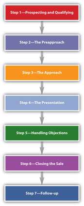

You may have been surprised if someone told you that movie scripts, regardless of the genre, all follow the same basic formula—the same sequence of events—almost down to the minute: after three minutes, the central question of the movie is introduced; after twenty-seven more minutes, the main character will set off on a new path; fifteen minutes more, and something symbolic will happen; and so on.Viki King, How to Write a Movie in 21 Days (New York: Quill Harper Resource, 2001), 34–37. It’s hard to believe that The Fast and the Furious would follow the same formula as The Notebook, but once you know what to look for, you’ll see that the structure holds up. Clearly, Hollywood has come to learn that this particular structure is the secret to keeping the audience’s attention, earning positive reviews, and selling movies.
In the same way, almost all selling—regardless of the product that’s being sold—follows a particular sequence of steps. It’s a simple but logical framework that has been the accepted model for almost a hundred years.William C. Moncreif and Greg W. Marshall, “The Evolution of the Seven Steps of Selling,” Industrial Market Management 34, no. 1 (2005): 13–22. Salespeople have adapted the specifics of the process as culture and technology have changed, but the fact that they’ve followed the same basic model has for so long testifies to its effectiveness. The selling processA sequence of steps that builds a framework for selling. is generally divided into seven steps that, once you understand them, will empower you to sell virtually anything you want and satisfy your customers:
Each step of the seven-step process is covered thoroughly in this and the next six chapters so that you can learn the details of each step and how to apply them in various selling situations.
Figure 7.1 Seven-Step Selling ProcessAdapted from Michael R. Solomon, Greg W. Marshall, and Elnora W. Stuart, Marketing: Real People, Real Choices, 5th ed. (Upper Saddle River, NJ: Pearson Prentice Hall, 2008), 450.
As you learned in Chapter 3 "The Power of Building Relationships: Putting Adaptive Selling to Work", the sales process is adaptive, which means that each situation may be different and salespeople have to adapt and understand what is important to each customer and where each is in the buying process. But in order for a salesperson to use adaptive selling, he or she must thoroughly understand the steps in the selling process and how each works to can use them effectively.
While the basics of the selling process have remained the same over the years, the methods of communication and the way people interact are quickly evolving with the use of the interactive capabilities on the Internet by customers and salespeople alike. Each step now includes much more collaboration between customers and salespeople (and even between customers) with the use of social networking, consumer reviews, wikis, and other community-based tools. This technology allows salespeople to learn more about their customers at each step, and therefore provide more relevant and powerful solutions to customers at each stage of the buying process (covered in Chapter 6 "Why and How People Buy: The Power of Understanding the Customer").Selling Power Sales 2.0 Newsletter, Selling Power, September 18, 2008, http://www.sellingpower.com/content/newsletter/issue.php?pc=868 (accessed June 21, 2010).
Let’s say you want to buy a gym membership. Maybe you received a promotional offer in the mail, your friends on Facebook have had good things to say about a particular gym, or you picked this club because it’s close to home. Whatever the reason, you wander in and ask to speak to the membership director who seems to know a lot about the club and what you might be looking for. After some small talk about the fact that you both live in the same apartment complex, he tells you about the gym’s amenities and gives you a tour of the facility. Then, you sit down to discuss pricing options and payment plans. If you have any questions or concerns (i.e., “I noticed there are only three tennis courts. Is there usually a long wait to use one?” or “Why aren’t there any kickboxing classes on your class schedule?”), the membership director will attempt to address those. Maybe he will tell you there is occasionally a wait to use the tennis courts at peak times, but you can reserve a spot up to a week in advance, in which case you can get right in. Or maybe he’ll say that while they don’t have kickboxing classes, they offer Zumba, which is a fun aerobic alternative.
If you’re satisfied with his responses, and the price and product meet your needs, you will probably decide to sign a contract. Once you’ve signed, someone from the club will probably follow up with a call in a few weeks to see if you’re satisfied with your experience at their gym, or you may get an e-mail from them with a membership satisfaction survey or a text message about an upcoming event.
The example above is an actual selling situation. Although you may not have realized it while you were reading it, the situation follows the seven-step selling process.
Whether you’re buying a gym membership or a car, cell phone service or a new computer, the situation may be different, but the steps in the selling process will follow the same pattern.
The process isn’t only limited to business-to-consumer sales; it’s also the process that IBM will use to sell servers to a corporation, that Accenture will use to sell consulting services to a technology company, or that the Coffee Brewers Company will use to sell espresso machines to coffee shops. Imagine you run a chic new restaurant. You get a call from a salesperson who compliments you on the roasted chicken she had at your restaurant last weekend. After some conversation, she asks if you’re satisfied with your commercial ovens. You have been having some problems with them and have been doing some casual research online. You know that her company is rated as one of the best oven manufacturers, so you tell her: the ovens are over ten years old, they take a long time to heat up, and they sometimes cook things unevenly.
“Many older ovens have this problem,” she says. “Would you be interested in learning about the state-of-the-art commercial ovens our company sells?”
Since you need a solution for your current ovens, you agree to set up an appointment with the salesperson. When the she arrives, you are impressed that she knows so much about your business. She visited your restaurant, reviewed your menu, spoke with some of the wait staff, read reviews on the city magazine Web site, and even had some conversations with some of your patrons on Chef’s Blog. She explains that the ovens she sells heat up quickly and use energy more efficiently. She gives you an estimate of your annual savings on energy costs if you switched over to her product line.
You’re interested, but you’re concerned that the ovens might not cook food evenly. Ovens are a big expense—what happens if you aren’t satisfied with the product? The salesperson says you can lease an oven for a trial period at no obligation, and she shows you reviews from other customers on her company’s Web site and on some restaurant industry blogs. You feel like this might help you solve your problem, so you agree to lease the machine for four months.
After two months, the salesperson calls to ask if you’ve been satisfied with the product so far, and she offers you a discount if you sign a contract to purchase two ovens in the next ten days. Since you have been happy with the leased oven and checked out the company’s service record online from other current customers, you make the purchase.
As in the gym membership example above, this B2B selling situation follows the seven-step framework. Now, take a minute to review this selling situation in the box below to see exactly how the steps are implemented.
Compare the B2B and B2C examples you just read about. Do you notice a pattern? Although the products and customers were quite different, both salespeople adapted to the situation and the customer’s needs, but followed the same seven steps to successfully complete their sales. In fact, you’ve probably used a version of these seven steps yourself before without even realizing it. Take a look at some real-world selling examples below and how of each of the steps is used.
Before planning a sale, a salesperson conducts research to identify the people or companies that might be interested in her product. In the B2B example, before the salesperson called the company, she had to find the company’s information somewhere—probably in a local business directory. This step is called prospectingIdentifying potential buyers for a product or service., and it’s the foundational step for the rest of the sales process. A leadA potential buyer for a product or service that has not yet been qualified. is a potential buyer. A prospectA potential buyer for a product or service; also referred to as a qualified lead. is a lead that is qualified or determined to be ready, willing, and able to buy. The prospecting and qualifying step relates to the needs awareness step in the buying process described in Chapter 6 "Why and How People Buy: The Power of Understanding the Customer". In other words, in a perfect world, you are identifying customers who are in the process of or have already identified a need.
Undoubtedly, when the salesperson called the target customer to discuss his ovens (in the example, you were the customer), she asked some questions to qualifyDetermining whether a lead has the desire and ability to buy your product or service. him as a prospect, or determine whether he has the desire and ability to buy the product or service. This is the other component to step one. What happens if the customer is not interested in the salesperson’s product, or he’s interested but his business is struggling financially and doesn’t have the resources for a big purchase? Perhaps he is only an employee, not the manager, and he doesn’t have the authority to make the purchasing decision. In this case, he is no longer a prospect, and the salesperson will move on to another lead. Salespeople qualify their prospects so they can focus their sales efforts on the people who are most likely to buy. After all, spending an hour discussing the capabilities of your company’s ovens with a lead that is about to go out of business would be a waste of time. It’s much more fruitful to invest your time with a qualified prospectA prospect a salesperson has determined has the desire and ability to buy the product or service., one who has the desire or ability to buy the product or service.
The preapproachThe preparation and research a salesperson does before making the sales call. is the “doing your homework” part of the process. A good salesperson researches his prospect, familiarizing himself with the customer’s needs and learning all the relevant background info he can about the individual or business.Geoffrey James, “6 Things to Know about Every Prospect,” BNET, January 12, 2009, http://blogs.bnet.com/salesmachine/?p=705 (accessed June 9, 2009). Remember that in the B2B example, the salesperson knew important information about the restaurant beforehand. She came prepared with a specific idea as to how her service could help the prospect and gave a tailored presentation.
First impressions (e.g., the first few minutes of a sales call) are crucial to building the client’s trust.Michael T. Bosworth, Solution Selling: Creating Buyers in Difficult Selling Markets (New York: McGraw-Hill, 1995), 106. If you’ve ever asked someone on a first date (yes, this is a selling situation), chances are you didn’t call the person and start the conversation off with the question, “Hey, do you want to go out on Saturday night?” Such an abrupt method would turn most people away, and you probably would not score the date you were hoping for. Similarly, as a professional salesperson, you would almost never make a pitch right away; instead, you’d work to establish a rapport with the customer first. This usually involves introductions, making some small talk, asking a few warm-up questions, and generally explaining who you are and whom you represent.Paul Cherry, Questions That Sell: The Powerful Process of Discovering What Your Customer Really Wants (New York: AMACOM, 2006), 21.,Neil Rackham, The SPIN Selling Fieldbook (New York: McGraw-Hill, 1996), 40. This is called the approachThe first few minutes of a sales call, during which the salesperson explains her purpose for coming and establishes a rapport..
There’s a good deal of preparation involved before a salesperson ever makes her pitch or presentationThe part of the sales call when the salesperson offers her solution for the prospect., but the presentation is where the research pays off and her idea for the prospect comes alive. By the time she presents her product, she will understand her customer’s needs well enough to be sure she’s offering a solution the customer could use. If you’re a real estate agent selling a house and your customers are an older, retired couple, you won’t take them to see a house with many bedrooms, several flights of stairs to climb, and a huge yard to keep up—nor will you show them around a trendy loft in a busy part of town. The presentation should be tailored to the customer, explaining how the product meets that person or company’s needs. It might involve a tour (as in this real estate example), a product demonstration, videos, PowerPoint presentations, or letting the customer actually look at or interact with the product. At this point, the customer is using the information that is being shared as part of his evaluation of possible solutions.
After you’ve made your sales presentation, it’s natural for your customer to have some hesitations or concerns called objectionsHesitations or concerns a prospect might have about the product or purchasing process.. Good salespeople look at objections as opportunities to further understand and respond to customers’ needs.William C. Moncreif and Greg W. Marshall, “The Evolution of the Seven Steps,” Industrial Marketing Management 34, no. 1 (2005): 14, 15. For instance, maybe you’re trying to convince a friend to come camping with you.
“I’d like to go” your friend says, “but I’ve got a big project I need to finish at work, and I was planning to spend some time at the office this weekend.”
“That’s no problem,” you tell him. “I’m free next weekend, too. Why don’t we plan to go then, once your project’s out of the way?”
Eventually, if your customer is convinced your product will meet her needs, you closeAgreeing on the terms of the sale and finalizing the transaction. by agreeing on the terms of the sale and finishing up the transaction.Thomas A. Freese, Secrets of Question Based Selling (Naperville, IL: Sourcebooks, Inc., 2003), 166. This is the point where the potential gym member signs her membership agreement, the restaurant owner decides to purchase the ovens, or your friend says, “Sure, let’s go camping next weekend!” Sometimes a salesperson has to make several trial closesAn attempt to close the sale. during a sales call, addressing further objections before the customer is ready to buy.Dave Dolak, “Sales and Personal Selling,” http://www.davedolak.com/psell.htm (accessed June 10, 2009). It may turn out, even at this stage in the process, that the product doesn’t actually meet the customer’s needs. The important—and sometimes challenging—part of closing is that the seller has to actually ask if the potential customer is willing to make the purchase.William C. Moncreif and Greg W. Marshall, “The Evolution of the Seven Steps,” Industrial Marketing Management 34, no. 1 (2005): 14, 15. When the close is successful, this step clearly aligns with the purchase step in the buying process.
OK, so you’ve completed a landscaping job for your customer or sold him a car or installed the software that meets his needs. While it might seem like you’ve accomplished your goal, the customer relationship has only begun. The follow-upThe final step of the process in which the salesperson assures customer satisfaction and maintains customer relationships. is an important part of assuring customer satisfaction, retaining customers, and prospecting for new customers. This might mean sending a thank-you note, calling the customer to make sure a product was received in satisfactory condition, or checking in to make sure a service is meeting the customer’s expectations. This is the follow-up e-mail you get from Netflix every time you return a movie by mail. It’s Amazon’s invitation to “rate your transaction” after you receive your Amazon order. Follow-up also includes logistical details like signing contracts, setting up delivery or installation dates, and drawing up a timeline. From the buyer’s perspective, the follow-up is the implementation step in the buying process. Good follow-up helps ensure additional sales, customer referrals, and positive reviewsDave Dolak, “Sales and Personal Selling,” http://www.davedolak.com/psell.htm (accessed June 10, 2009). and actually leads you back to the first step in the selling process because it provides the opportunity to learn about new needs for this customer or new customers through referrals.